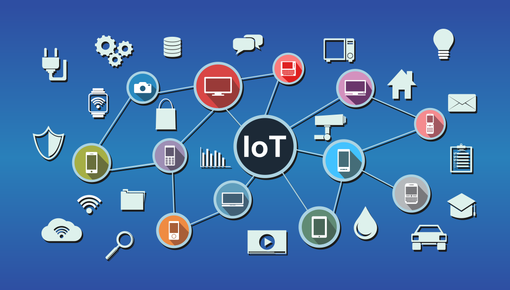

My Blogs
Technologies

There are various kinds of technologies in the world. All of which have been created to make a given task easier to perform. We have created varous types tools and devices to facilitate our work and make our daily activities convenient. For example, we can communicate to people almost anywhere in the world through various communication devices. We can mass produce any commodity which are required in our day-to-day activities. Simply, we can describe technology as the tools which makes any given action easier and faster. The technologies have played a significant role in the evolution of human beings. The ability to create and use the tools has empowered us to craft anything that we want. We have created various complex physical objects like vehicles, buildings, appliances, furniture, etc. To create a technology, various processes, skills, techniques and methods need to organized together and implied. These things need to be considered to make any technological structure sustainable and reliable. Currently, the digital technologies of mobile phones, computers, televisions, etc. have become availabe to most people throughout the world. So, any news, event or valuable information can be transmitted very easily. Therefore, technology are very useful for the people as it helps to make things efficient and effective.
Positive Impacts of Technology

The technologies have created a huge impact on how we do things. Any activity which requires a huge amount of time and effort can be signficantly made easier with the help of technology.The various areas where technology has created a positive impact are:
- Transportation:
- Communication:
- Education:
- Business:
The technology has improved the transportation significantly over the years. Before we would be limited to travel only within nearby areas as there was no means to travel very far. Nowadays, we have access various transportation mediums for land, water and air transportation like cars, buses, trains, ships, airplanes, etc. The transportation technology has enabled massive number of people to travel between places simultaneously. With the enhancement of travel many other activities gets enhanced as well. Therefore, technology has created significant contribution for efficiency in transportation.
Technology has helped to establish the tools for communication. It has provided the platform to send and receive message instantaneously from any part of the world. Because of this, we don’t have to wait for the mail to be delivered physically from one part of the world to another or go to someone’s house to just deliver a message and so on. Therefore, technology has significantly reduced the time and effort required for communication process.
One of the most significant aspect of technology is that it has made the information available to anyone who wants to learn some new skill which may not be taught in the schools or certain geographic location. The availability of online courses, web seminars, e-books, etc. has made learning more interactive and efficient as people don’t have to go to libraries or wait for the book to be available in their region. We can simply get books online and read it at any time we want
Technology helps in boosting the business by improving the strategies of the business with the use of accurate data and statistics. It has also made the transactions easier with the invention of tools like credit card, online banking, e-commerce, etc. Moreover, it has made creating advertisements and promoting business easier as well as cost-efficient as we don’t need to print thousands of brochures, pamphlets, etc., we can simply target our advertisements to interested customers through various digital marketing tools and artificial intelligence.
Negative Impacts of Technology

The technology has been created for making our life easier and better and it also does in so many different ways. However, there are also a number of aspects where the technology has a negative impact. Some of which are elaborated below:
- Health:
- Environment:
- Security:
There is no doubt that the technology has made our life easier and convenient. However, these conveniences have made a lot of people lazy. Compared to previous generations, we don’t need to do perform much physical activities as the technologies have made transporting accessories much easier. We can do most of our daily activities and work from within our homes. Also, we can entertain ourselves with various content and get food and other accessories delivered to our homes. Because of all these facilities, people just sit in the same place playing games, watching movies, etc. This makes people lazy, inactive and addicted to mobile and computers. Such practice can cause severe physical as well as psychological health problems over a period of time. Therefore, overuse of technology without physical activity can cause major health issues.
In order to mass produce technological devices, various industries need to extract the resources from the planet and the process of manufacturing them generally dissipates a lot of unwanted chemicals and gases. These chemicals get mixed in the river and gases in the air. Such pollutants affect adversely on the health and well-being of the people as well as the environment. The raw materials used for manufacturing the technical equipments are extracted from the earth through various mining processes and after they become unusable, damaged or obsolete. They get discarded as waste. Moreover, the machines and devices produce a lot of unwanted sound while operating which creates disturbance for the nearby people. Therefore, the technology manufacturing process causes various types of land, water, air and noise pollution.
Most people nowadays have access to internet and actively use it on a daily basis. Various social media applications, online banking applications, computers connected to a network, etc. contain various information, some of which may be personal and contain sensitive information such as personal details, bank account details, company product details, etc. Since these information are stored online, the information can be hacked by cyber criminals, who may destroy or sell the sensitive company information, steal money or cause harm to individuals as well as companies. Most people who are not tech savvy and companies that have not taken measures to secure their information, can fall victim to such attacks and various scams. Therefore, the technology has various vulnerabilities and flaws which may compromise the security of valuable information.
Conclusion
In short, we can say that technology surely has made our lives better by reducing the time and effort we need to put to complete certain activities. The technology has made transportation, communication, education, business and many other areas significantly convenient. But along with all the benefits there are also various disadvantages that the technology brings like affecting the health and wellbeing of all the plants, animals and the environment as well as creating various security risks which may cause huge loss for individuals and companies. So, to minimize these effects we must reuse, reduce and recycle the technologies as much as possible to minimize the resource exhaustion. Also, we must learn and apply the measures to secure our online presence as well as involve ourselves in physical activities so we can stay healthy and fit. Thus, the technology can become very useful instruments if used properly but it can also cause severe loss if we do not pay proper attention to its negative aspects.